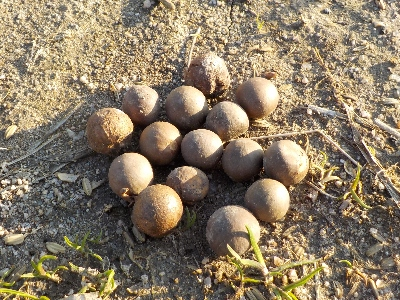
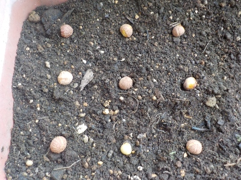
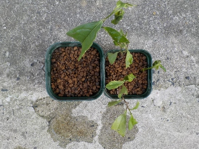
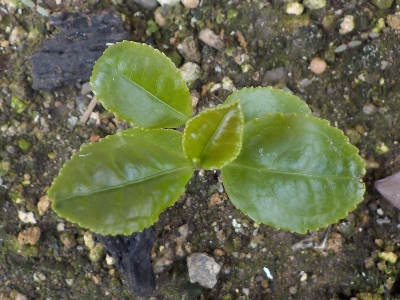
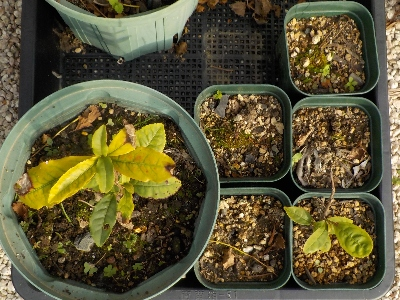

お茶の実を拾いました。
更新日 : 2025/03/09

お茶の木の周りの草を刈ってたら実が落ちていました。育てようかな。
お茶は買った方が安くて簡単なので家のチャノキはあまり活用していなかったですが、今年はお茶を摘んで飲もうかと考えています。
更新日 : 2025/03/09

お茶の木の周りの草を刈ってたら実が落ちていました。育てようかな。
お茶は買った方が安くて簡単なので家のチャノキはあまり活用していなかったですが、今年はお茶を摘んで飲もうかと考えています。
更新日 : 2025/03/16

先日採取したお茶の実を蒔きました。
お茶の実は乾燥しないように早く収穫してって書いてある記事があります。これは早く収穫していないの乾燥しているのかな？殻を割ってみた感じはドライになってるようには思えないんだけどな。
確率の問題で、ちょっとでも早いと発芽の率が高いのかな？。今回9粒蒔いたので、その確率を考えても何個かは発芽はするんじゃないかと期待しています。
更新日 : 2025/05/28

チャノキの回りの草取りをしたんですが、その時に草と一緒にお茶の枝をちぎったり引っこ抜いたものがあったので、それを使って挿し木しました。
有効活用です。
以前に種蒔きしたものはまだ芽が出ていません。発芽しない可能性があるので、挿し木を今後追加してやろうかなと思っています。
更新日 : 2025/06/22

チャノキの生まれたてってこんな感じなんですね。茎が伸びないで葉っぱがドンドン出るんだ。
更新日 : 2025/11/24

種蒔きして発芽したチャノキは順調に育っているつもりだったんですが、秋の初めくらいになぜか全部枯れました。
挿し木は全然ダメで、挿した後にすぐ枯れました。
生き残ったのは引っこ抜いて根っこが少しあった2本だけです。増やすんなら過密に生えてるところから引っこ抜いて植え替えするのが一番良さそうです。
自分で育てたお茶は美味しいんだろうか？。